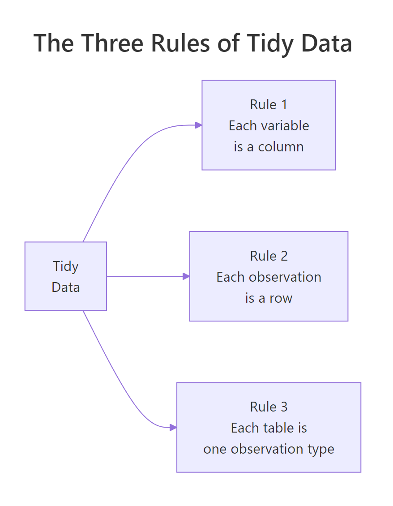
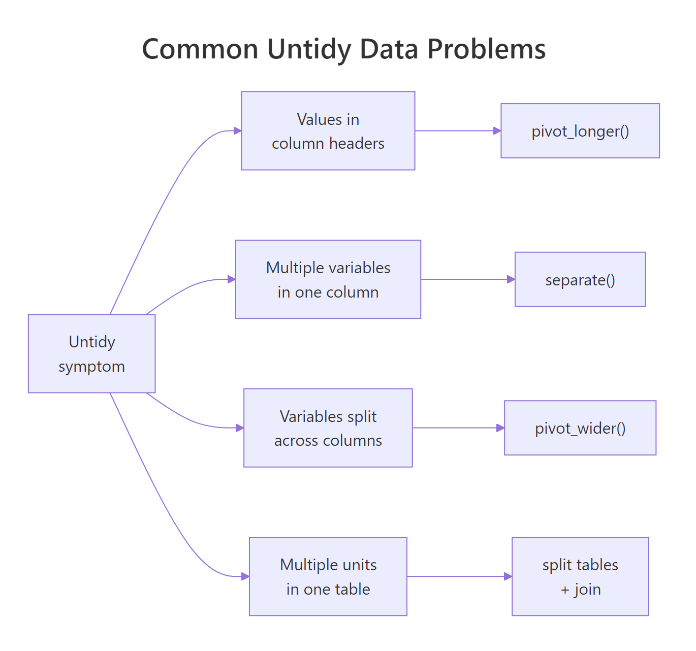

Tidy Data: The One Rule That Makes R Code Readable, Reusable, and Debuggable
Tidy data is a standard shape for tabular data where each row is one observation, each column is one variable, and each table describes one kind of thing. Follow those three rules and almost every dplyr, ggplot2, and tidyr function becomes a one-liner.
What is tidy data and why does it matter?
The same facts can be stored in dozens of different table shapes. Most are awkward to work with. "Tidy data" is the specific shape Hadley Wickham proposed in his 2014 JSS paper that makes analysis predictable. The payoff is immediate — the same plot takes one line instead of a struggle. Let's see it on a small made-up dataset of sales by quarter and store.
RInteractive R
library(tidyr); library(dplyr); library(ggplot2)
# Messy version: quarters as columns
messy <- tibble(
store = c("North", "South", "East"),
Q1 = c(120, 90, 150),
Q2 = c(140, 110, 160),
Q3 = c(135, 125, 155)
)
messy
#> # A tibble: 3 x 4
#> store Q1 Q2 Q3
#> <chr> <dbl> <dbl> <dbl>
#> 1 North 120 140 135
#> 2 South 90 110 125
#> 3 East 150 160 155
# Tidy version: one row per observation
tidy <- messy |>
pivot_longer(cols = Q1:Q3, names_to = "quarter", values_to = "sales")
tidy
#> # A tibble: 9 x 3
#> store quarter sales
#> <chr> <chr> <dbl>
#> 1 North Q1 120
#> 2 North Q2 140
#> 3 North Q3 135
#> 4 South Q1 90
#> 5 South Q2 110
#> 6 South Q3 125
#> 7 East Q1 150
#> 8 East Q2 160
#> 9 East Q3 155
Same nine numbers, different shape. Now watch the difference when you want a simple line plot of sales over time by store:
RInteractive R
# Try to plot the messy version directly — you cannot.
# Quarter is not a column, so you cannot map it to x.
# Tidy version: one line of ggplot
ggplot(tidy, aes(quarter, sales, group = store, color = store)) +
geom_line() + geom_point()
The messy version cannot be plotted without reshaping. That is the core problem tidy data solves: it matches the mental model every tidyverse function was built around.

Figure 1: Three rules, one purpose. Every tidyverse function expects this shape and rewards you when you provide it.
Key Insight
Untidy data is not "wrong" — it is often what humans produce because it is compact. But analysis tools prefer the tidy shape, so you spend roughly the first 30% of every project moving data toward it.
Try it: Which of the three tables below is tidy?
RInteractive R
library(tibble)
a <- tibble(name = c("Asha","Bilal"), math = c(88,72), science = c(81,79))
b <- tibble(name = c("Asha","Asha","Bilal","Bilal"),
subject = c("math","science","math","science"),
grade = c(88,81,72,79))
c <- tibble(stat = c("math","science"), Asha = c(88,81), Bilal = c(72,79))
# Your answer: a, b, or c?
Click to reveal solution
RInteractive R
b
#> # A tibble: 4 x 3
#> name subject grade
#> <chr> <chr> <dbl>
#> 1 Asha math 88
#> 2 Asha science 81
#> 3 Bilal math 72
#> 4 Bilal science 79
Table b is tidy: each row is one student-subject observation, each column is one variable (name, subject, grade). Table a hides the subject variable in column headers, and table c hides the student variable in headers — both would need a pivot_longer() before dplyr or ggplot would cooperate.
What are the three rules of tidy data?
Wickham's original paper states them in one sentence each:
Each variable forms a column. If a measurement has a name, it gets its own column.
Each observation forms a row. An observation is a single instance of the thing you are studying.
Each type of observational unit forms a table. Don't mix two kinds of things (say, people and purchases) into one table.
The first two do most of the work. The third one matters mainly when your dataset has several levels — customers who place orders, teachers who teach classes, countries that report population by year. Mixing levels in one table leads to duplicated data and update anomalies.
RInteractive R
library(tibble)
# Tidy — one row per student-subject pair, one table for grades only
grades <- tibble(
student = c("Asha","Asha","Bilal","Bilal","Cleo","Cleo"),
subject = c("math","science","math","science","math","science"),
score = c(88, 81, 72, 79, 95, 90)
)
grades
#> # A tibble: 6 x 3
#> student subject score
#> <chr> <chr> <dbl>
#> 1 Asha math 88
#> 2 Asha science 81
#> ...
Each row is one observation (a student's score in one subject). Each column is one variable (student, subject, score). The table contains only grades — no teacher info, no school info, no class schedule.
When you need to add more variables — say, the teacher for each subject — the tidy answer is a second table:
RInteractive R
teachers <- tibble(
subject = c("math","science"),
teacher = c("Mr. Singh","Dr. Gupta")
)
# Combine only when you need to
grades |> left_join(teachers, by = "subject")
#> # A tibble: 6 x 4
#> student subject score teacher
#> <chr> <chr> <dbl> <chr>
#> 1 Asha math 88 Mr. Singh
#> 2 Asha science 81 Dr. Gupta
#> ...
Two small tables with a join is the tidy alternative to one big redundant table. It avoids the "if Mr. Singh changes name I need to update 50 rows" problem.
Note
In database terms, rules 1 and 2 match first normal form (1NF), and rule 3 matches third normal form (3NF). Tidy data is not new theory — it is relational design wearing a friendlier name.
Try it: Name the variables and observation types in this dataset. What would the tidy version look like?
library(tidyr); library(tibble); library(dplyr)
raw <- tibble(
teacher = "Mr. Singh",
subject = "math",
asha_score = 88,
bilal_score = 72,
cleo_score = 95
)
raw |>
pivot_longer(
cols = ends_with("_score"),
names_to = "student",
values_to = "score"
) |>
mutate(student = sub("_score", "", student))
#> # A tibble: 3 x 4
#> teacher subject student score
#> <chr> <chr> <chr> <dbl>
#> 1 Mr. Singh math asha 88
#> 2 Mr. Singh math bilal 72
#> 3 Mr. Singh math cleo 95
The hidden variables are student (buried in column names like asha_score) and score. Two observation types are also mixed — teachers-for-subjects and students-for-subjects — so a fully tidy version would split into a teachers table (subject, teacher) and a grades table (student, subject, score) joined on subject.
How do you spot values hiding in column headers?
This is the most common untidy pattern. Column names should be variable names, not variable values. If your columns are named 2020, 2021, 2022, then "year" is a variable and those numbers are its values — they should be rows, not headers.
RInteractive R
library(tidyr); library(tibble)
population <- tibble(
country = c("India","Brazil","Kenya"),
`2020` = c(1380, 212, 53),
`2021` = c(1393, 214, 54),
`2022` = c(1417, 215, 54)
)
population
#> # A tibble: 3 x 4
#> country `2020` `2021` `2022`
#> <chr> <dbl> <dbl> <dbl>
#> 1 India 1380 1393 1417
#> 2 Brazil 212 214 215
#> 3 Kenya 53 54 54
# Tidy it with pivot_longer
population |>
pivot_longer(
cols = -country,
names_to = "year",
values_to = "pop_millions",
names_transform = list(year = as.integer)
)
#> # A tibble: 9 x 3
#> country year pop_millions
#> <chr> <int> <dbl>
#> 1 India 2020 1380
#> 2 India 2021 1393
#> 3 India 2022 1417
#> ...
Now "year" is a column, just like "country". You can filter, group, plot, and model it like any other variable.
Tip
Quick diagnostic: if you catch yourself thinking "let me sum these three columns together", the columns are probably values of a hidden variable. Pivot first, then summarise(total = sum(...)).
Try it: Pivot this expense table so each row is one (category, month) observation.
RInteractive R
library(tidyr); library(tibble)
expenses <- tibble(
category = c("rent","food","travel"),
Jan = c(1200, 350, 100),
Feb = c(1200, 380, 200),
Mar = c(1250, 400, 150)
)
Click to reveal solution
RInteractive R
library(tidyr); library(tibble)
expenses <- tibble(
category = c("rent","food","travel"),
Jan = c(1200, 350, 100),
Feb = c(1200, 380, 200),
Mar = c(1250, 400, 150)
)
expenses |>
pivot_longer(cols = -category, names_to = "month", values_to = "amount")
#> # A tibble: 9 x 3
#> category month amount
#> <chr> <chr> <dbl>
#> 1 rent Jan 1200
#> 2 rent Feb 1200
#> 3 rent Mar 1250
#> 4 food Jan 350
#> ...
cols = -category tells pivot_longer() to gather every column except category, turning Jan, Feb, Mar into values of a new month column. One observation — "one category in one month" — now lives on one row, so group_by(month) and ggplot(aes(month, amount)) become one-liners.
What about multiple variables crammed into one column?
Sometimes a single column carries two variables glued together. male_2020, female_2020, male_2021, female_2021 — the column name encodes both sex and year. The fix is to pivot and split at the same time.
RInteractive R
library(tidyr); library(tibble)
cases <- tibble(
country = c("India","Brazil"),
male_2020 = c(500, 300),
female_2020 = c(450, 280),
male_2021 = c(520, 320),
female_2021 = c(470, 290)
)
cases |>
pivot_longer(
cols = -country,
names_to = c("sex", "year"),
names_sep = "_",
values_to = "cases",
names_transform = list(year = as.integer)
)
#> # A tibble: 8 x 4
#> country sex year cases
#> <chr> <chr> <int> <dbl>
#> 1 India male 2020 500
#> 2 India female 2020 450
#> 3 India male 2021 520
#> 4 India female 2021 470
#> ...
Giving names_to a vector of two names and providing names_sep splits the header into two columns during the pivot. No second step needed.

Figure 2: The four most common untidy patterns and the tidyr function that fixes each. Memorize this table — it covers 95% of real cleanup jobs.
The other side of the same problem is a value column that mashes two things together. Think a name column with entries like "Asha (Math)" or a range column with "18-24". The fix is separate (or tidyr::extract with a regex):
RInteractive R
library(tidyr); library(tibble)
raw <- tibble(label = c("Asha (Math)","Bilal (Science)","Cleo (History)"))
raw |>
separate(label, into = c("student","subject"), sep = " \\(", extra = "drop") |>
mutate(subject = gsub("\\)", "", subject))
#> # A tibble: 3 x 2
#> student subject
#> <chr> <chr>
#> 1 Asha Math
#> 2 Bilal Science
#> 3 Cleo History
Once split, each variable is in its own column and you can filter or group as usual.
Warning
separate() is superseded by separate_wider_delim() and separate_wider_regex() in tidyr ≥ 1.3. Both work; the new names are recommended for fresh code.
Try it: Split the code column into year and category.
RInteractive R
library(tibble); library(tidyr)
tbl <- tibble(code = c("2024-A","2024-B","2025-A"), value = c(10,20,15))
# Hint: separate(code, into = c("year","category"), sep = "-")
Click to reveal solution
RInteractive R
library(tibble); library(tidyr); library(dplyr)
tbl <- tibble(code = c("2024-A","2024-B","2025-A"), value = c(10,20,15))
tbl |>
separate(code, into = c("year","category"), sep = "-") |>
mutate(year = as.integer(year))
#> # A tibble: 3 x 3
#> year category value
#> <int> <chr> <dbl>
#> 1 2024 A 10
#> 2 2024 B 20
#> 3 2025 A 15
separate() splits on the first - and drops the two resulting pieces into the named columns — year starts out as character because the source was character, so the mutate() upgrades it to integer. In modern tidyr (≥ 1.3) separate_wider_delim(code, delim = "-", names = c("year","category")) does the same job with a more explicit name.
How do you handle variables split across columns?
The mirror-image problem: one variable spread across multiple columns. The classic case is a table where each row has a min column and a max column for the same quantity, or a type column and a value column where type is what should have been the column name.
RInteractive R
library(tidyr); library(tibble)
temps <- tibble(
city = c("Pune","Pune","Berlin","Berlin"),
stat = c("min","max","min","max"),
value = c(20, 38, -4, 28)
)
temps
#> # A tibble: 4 x 3
#> city stat value
#> <chr> <chr> <dbl>
#> 1 Pune min 20
#> 2 Pune max 38
#> 3 Berlin min -4
#> 4 Berlin max 28
# Tidy: one row per city, with min and max as their own columns
temps |>
pivot_wider(names_from = stat, values_from = value)
#> # A tibble: 2 x 3
#> city min max
#> <chr> <dbl> <dbl>
#> 1 Pune 20 38
#> 2 Berlin -4 28
Wait — did we just go from long to wide? Is that not the opposite of tidy? Here is the subtle point. In the long version, every row holds half of an observation (just min, or just max). A single "temperature profile of a city" observation is split across two rows. The tidy shape is one row per city with min and max as separate columns — because min and max are two different variables, not two values of the same variable.
Key Insight
Wide is not always messy, and long is not always tidy. The question is: "what counts as one observation?" If min and max describe different things, they belong in separate columns. If they are two values of the same quantity (like Q1, Q2 sales), they belong in rows.
Not tidy: a single patient's measurements are spread across two rows, so "one row = one observation of a patient" is violated. height_cm and weight_kg are two different variables (different units, different meanings), so the right move is pivot_wider() to put each on its own column.
When should one table become two (or more)?
Rule 3 — one observation type per table — is the one most people skip. Consider a table that lists orders but also repeats the customer's name, email, and address on every row. If a customer has 10 orders, their name appears 10 times. Update one, forget the others, and your data is inconsistent.
The tidy answer is two tables: one for customers, one for orders, linked by an ID.
Now changing a customer's email means editing one row in one table. When you need the combined view for a report, join them on customer_id. This is exactly how relational databases store data — and for the same reasons.
Note
In a small ad-hoc script you can get away with the one-big-table form. In a pipeline that will run for a year, split the tables. The cost is two minutes of refactoring; the benefit is never debugging an email-update bug.
Try it: Split this mixed table into two tidy tables — products and sales.
distinct(product, price) pulls the unique product/price pairs into the products table, and select() drops the redundant price column from sales. Change a price later and you update one row in products instead of hunting down every sale — join on product when you need the combined view.
How does tidy data make dplyr and ggplot "just work"?
Every tidyverse function is designed assuming tidy input. Once the data is tidy, each analysis question becomes a short pipeline. Here are three common questions answered the tidy way.
RInteractive R
library(dplyr); library(ggplot2); library(tidyr)
# Setup: a tidy grades table
grades <- tibble(
student = rep(c("Asha","Bilal","Cleo","Daan"), each = 3),
subject = rep(c("math","science","english"), 4),
score = c(88, 81, 77, 72, 79, 85, 95, 90, 92, 60, 65, 70)
)
# Q1: average score per subject
grades |>
group_by(subject) |>
summarise(avg = mean(score))
#> # A tibble: 3 x 2
#> subject avg
#> <chr> <dbl>
#> 1 english 81
#> 2 math 78.75
#> 3 science 78.75
# Q2: top student in each subject
grades |>
group_by(subject) |>
slice_max(score, n = 1)
#> # A tibble: 3 x 3
#> # Groups: subject [3]
#> student subject score
#> <chr> <chr> <dbl>
#> 1 Cleo english 92
#> 2 Cleo math 95
#> 3 Cleo science 90
# Q3: bar chart of average score per subject
grades |>
group_by(subject) |>
summarise(avg = mean(score)) |>
ggplot(aes(subject, avg)) + geom_col()
Three questions, three short pipelines. Each one reads almost like English because the variables are exactly where tidyverse expects them: as columns with plain names. If grades had been stored in the wide shape (students as rows, subjects as columns), each of these questions would need a reshape first.
Tip
The "grammar of graphics" in ggplot and the "grammar of data manipulation" in dplyr were both designed around tidy data. Working outside that shape is not a sin, but it costs you the one-liner.
Try it: Given the tidy grades table above, compute the average score per student and sort descending.
RInteractive R
# Your code — group_by(student), summarise(avg = mean(score)), arrange(desc(avg))
group_by(student) tags each row with its group, summarise() collapses each group to a single row with the mean, and arrange(desc(avg)) sorts by the computed column. This pipeline reads left-to-right exactly like English because the data is tidy — each student already has their own set of rows to aggregate.
library(tibble); library(tidyr)
raw <- tibble(
period = c("2024-Q1","2024-Q2","2025-Q1","2025-Q2"),
revenue = c(100, 120, 130, 150)
)
# Goal: split period into year and quarter columns
Solution
RInteractive R
raw |>
separate(period, into = c("year","quarter"), sep = "-") |>
mutate(year = as.integer(year))
Exercise 3: Split into two tables
RInteractive R
library(tibble)
raw <- tibble(
class_id = c(1,1,2,2),
teacher = c("Ms. Rao","Ms. Rao","Mr. Khan","Mr. Khan"),
student = c("Asha","Bilal","Cleo","Daan"),
grade = c(88, 72, 95, 65)
)
# Goal: (class_id, teacher) and (class_id, student, grade) as two tidy tables
Solution
RInteractive R
classes <- raw |> distinct(class_id, teacher)
enrollments <- raw |> select(class_id, student, grade)
classes
enrollments
Complete Example
Here is the full tidy workflow on a messy spreadsheet export of student grades.
RInteractive R
library(tidyr); library(dplyr); library(ggplot2); library(tibble)
# Step 1: a realistically messy table
raw <- tibble(
school = c("Lincoln","Lincoln","Jefferson","Jefferson"),
student = c("Asha","Bilal","Cleo","Daan"),
math_2023 = c(88, 72, 95, 60),
math_2024 = c(91, 75, 96, 65),
sci_2023 = c(81, 79, 90, 65),
sci_2024 = c(85, 82, 92, 70)
)
# Step 2: pivot long and split headers in one call
long <- raw |>
pivot_longer(
cols = matches("_20"),
names_to = c("subject","year"),
names_sep = "_",
values_to = "score",
names_transform = list(year = as.integer)
)
long
#> # A tibble: 16 x 5
#> school student subject year score
#> <chr> <chr> <chr> <int> <dbl>
#> 1 Lincoln Asha math 2023 88
#> 2 Lincoln Asha math 2024 91
#> 3 Lincoln Asha sci 2023 81
#> ...
# Step 3: year-over-year improvement per student per subject
long |>
arrange(school, student, subject, year) |>
group_by(school, student, subject) |>
mutate(improvement = score - lag(score)) |>
filter(year == 2024) |>
arrange(desc(improvement))
# Step 4: plot with ggplot2 — trivial because data is tidy
ggplot(long, aes(x = year, y = score, color = student, linetype = subject)) +
geom_line() + geom_point() +
facet_wrap(~ school)
One pivot, one mutate, one ggplot. The messy version would have required nested loops or a bespoke reshaping function. Tidy data removes that friction entirely.
Summary
Rule
Means
Fix if broken
1. Each variable is a column
No variable hides in headers or values
pivot_longer()
2. Each observation is a row
No row carries half an observation
pivot_wider()
3. One observation type per table
No mixing of entity levels
Split + join with dplyr
Four practical takeaways:
Tidy is not always long. It depends on what counts as "one observation".
Headers are names, not values. If you are tempted to sum several columns, they are probably a hidden variable.
Two small tables beat one big one. Split by observation type, join on demand.
Tidy up first. Most bugs in analysis code trace back to non-tidy input.